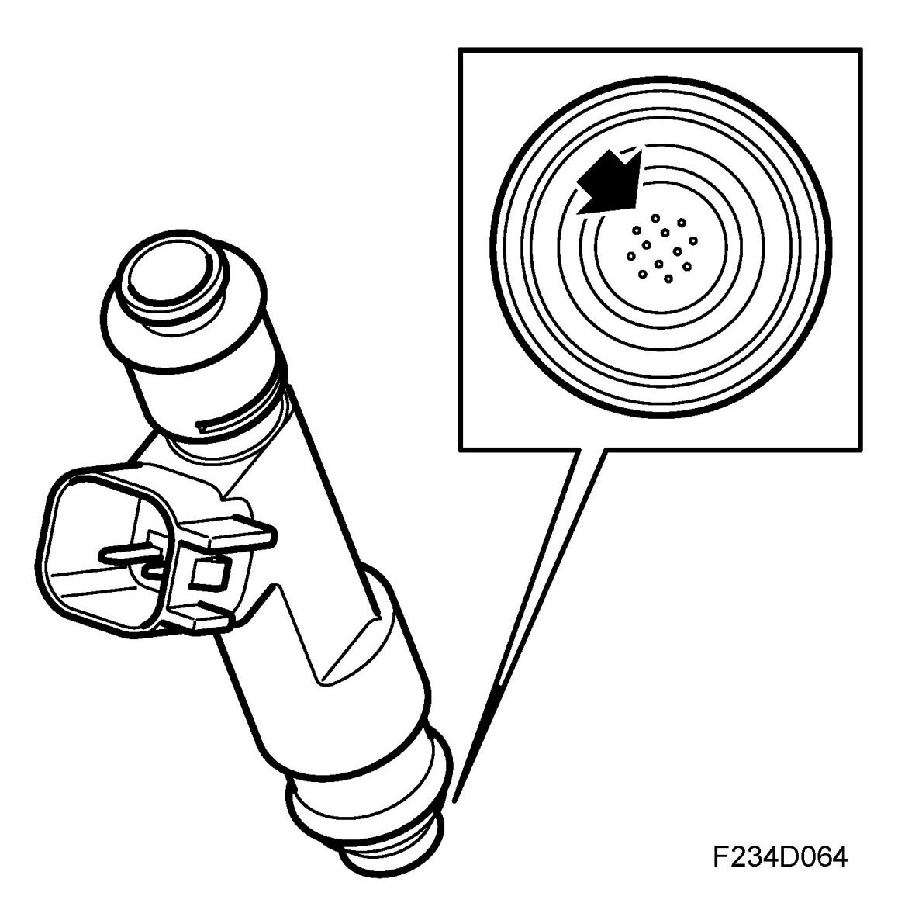
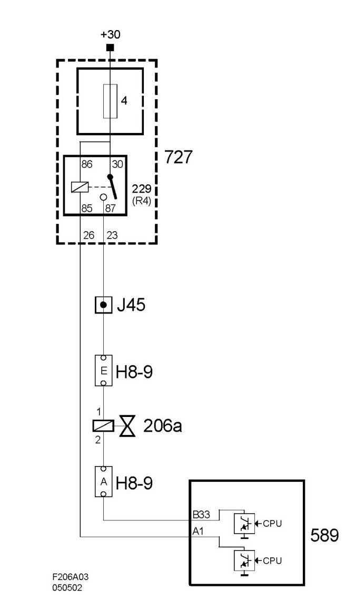
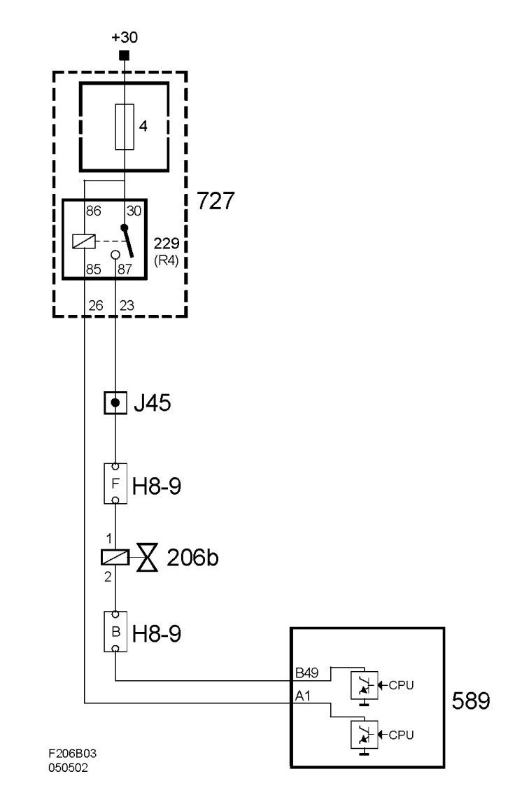
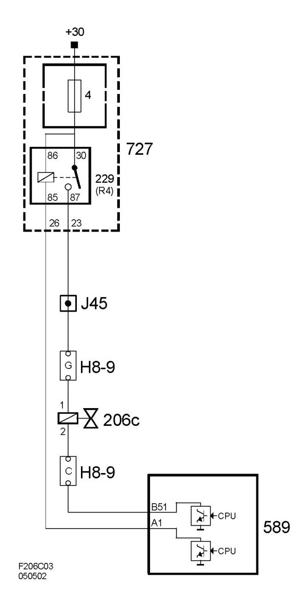
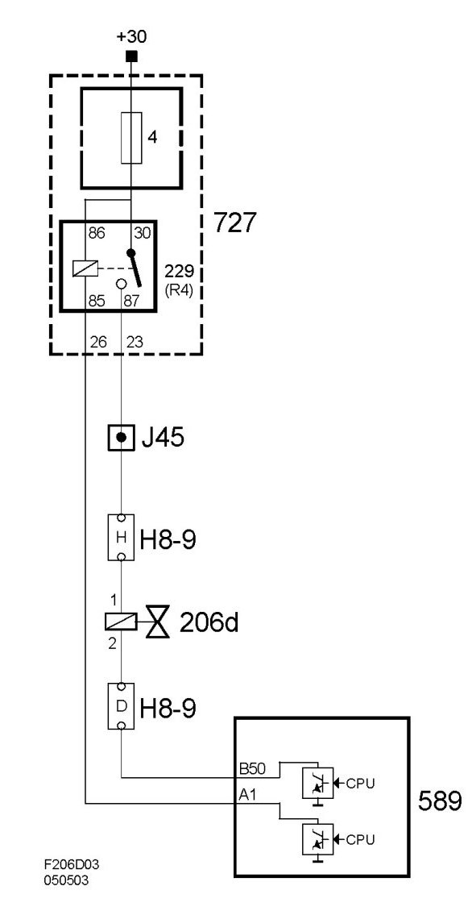

Injectors
Injectors

The injectors are of solenoid type with needle and seat. They open when current flows through the coil and a powerful spring closes them when the current is cut off.
To achieve optimum combustion and thereby cleaner exhaust gases, the injectors have air-flushed jets to give a good distribution of the fuel.
Air is fed to the injectors from a passage in the intake manifold. Air from in front of the throttle is led to the passage via a bypass in the throttle body.
The injectors must not be rotated; the connectors must point straight up. Otherwise, the fuel will hit the walls of the intake passages and affect emissions and driveability.
The injectors are identical on all 4-cyl engines.
The injectors are supplied with current from the main relay and are grounded by the control module as follows:
- Injector 1 is controlled by pin 33(B).

- Injector 2 is controlled by pin 49(B).

- Injector 3 is controlled by pin 51(B).

- Injector 4 is controlled by pin 50(B).

The microprocessor controls the transistor concerned according to the firing order so that injection is finished roughly when the inlet valve opens for the cylinder concerned.
The crankshaft angle when injection takes place depends on the current operating point.